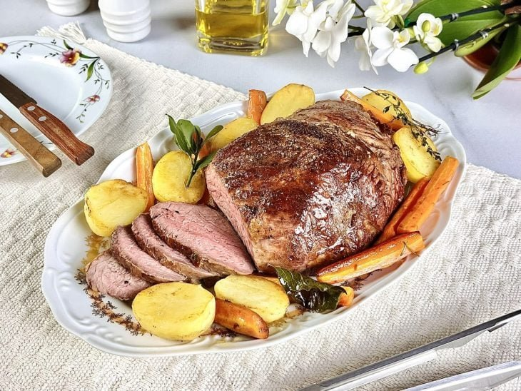

Carne Assada

Para essa deliciosa receita, você pode optar por deixar ou retirar a capa de gordura da carne. Por aqui, fizemos com a capa mesmo, que traz mais sabor e umidade à carne ao derreter. Prepare o tradicional arroz e feijão, uma saladinha e tenha uma refeição completa!
Ingredientes
- 1 peça de maminha (aproximadamente 1 kg)
- 1 colher de sobremesa de sal
- 1 colher de chá de pimenta-do-reino moída na hora
- Azeite a gosto
- Tomilho fresco a gosto
- Alecrim fresco a gosto
- Louro fresco a gosto
- 3 cenouras
- Dentes de alho a gosto
- 6 batatas pequenas
- Manteiga sem sal a gosto
Modo de preparo
- Retire a peça de maminha da geladeira uma hora antes de iniciar o preparo. Em uma bancada, deixe os ingredientes separados. Aproveite e preaqueça o forno a 180˚C;
- Corte as cenouras em pedaços grandes. Reserve;
- Corte as batatas ao meio e cozinhe-as por 15 minutinhos;
- Enquanto cozinham, pegue a peça de carne e tempere os dois lados com sal e pimenta-do-reino. Aqueça uma frigideira em fogo alto. Quando estiver bem quente, abaixe o fogo e sele a carne, a começar pelo lado da gordura e depois do outro lado. Não fique virando a carne, faça isso apenas uma vez para trocar os lados;
- Leve a carne já selada para uma assadeira e deixe a capa de gordura virada para cima. Coloque a cenoura e os dentes de alho e regue tudo com azeite. Finalize com ervas frescas;
- Chegou o momento de assar: deixe a carne no forno por 25 a 30 minutos. Enquanto isso, aqueça um pouco de manteiga em uma frigideira e doure as batatas já cortadas ao meio e pré-cozidas;
- Retire a carne do forno e leve para uma grelha para descansar por alguns minutos;
- Agora está tudo pronto. Transfira a carne para a travessa de sua preferência e sirva quente com os legumes e as batatas douradas!
Voltar